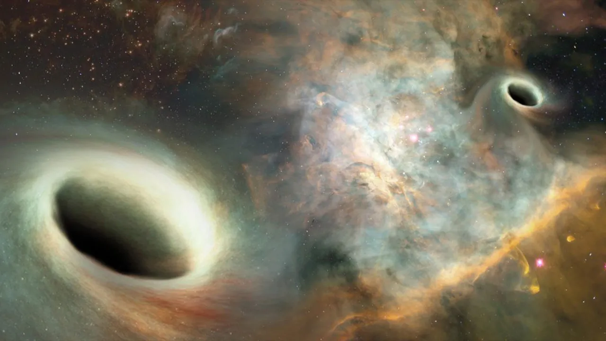
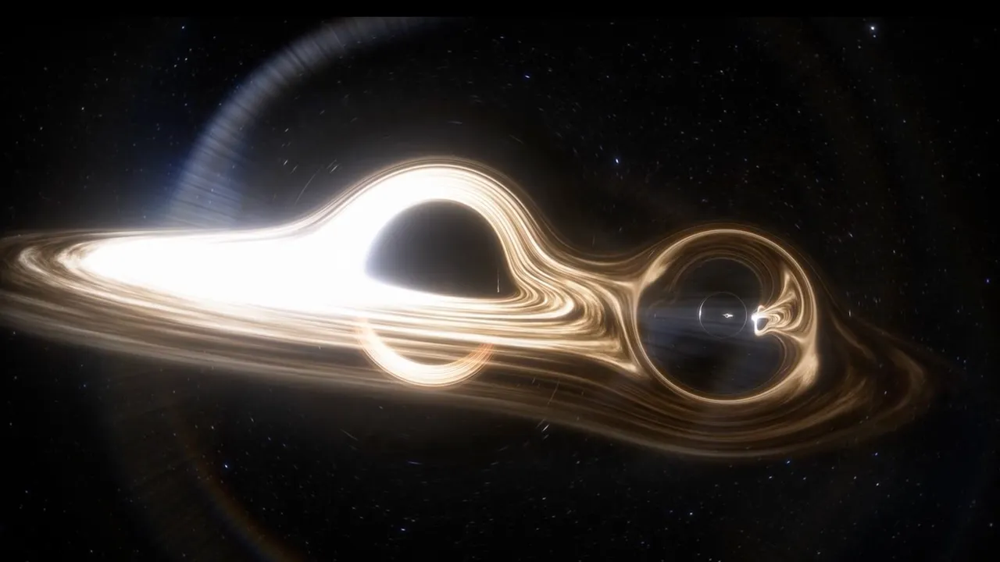
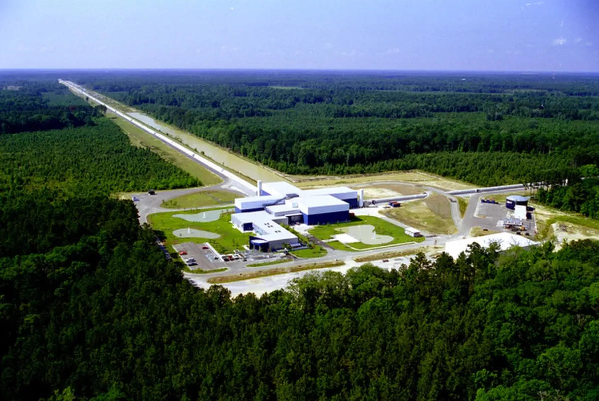

When two black holes collide, they create one of the most energetic events in the universe. The collision sends tiny ripples through space and time called gravitational waves, which travel across the cosmos at the speed of light.
Watch two giants collide
⬇Black holes are not always alone. Sometimes two black holes become trapped by each other's gravity and begin an incredible journey together. They orbit one another for millions or even billions of years before finally colliding.

The two black holes continuously orbit around each other. As they move, they slowly lose energy through gravitational waves. Because of this energy loss, they spiral closer and closer together.
Their speed increases dramatically until they are travelling at a significant fraction of the speed of light.
📸 Image Credit: LIVE SCIENCE.

Eventually the two black holes collide and merge into a single, larger black hole. The collision lasts less than a second but releases an enormous amount of energy.
For a brief moment, the collision produces more power than all the stars in the observable universe combined.
📸 Image Credit: LIVE SCIENCE.
Imagine throwing a stone into a calm lake. Ripples spread across the water. In a similar way, when black holes collide they create ripples in the fabric of space and time. These ripples are called gravitational waves.
Unlike ordinary waves, gravitational waves travel through space itself and move at the speed of light.
Two black holes orbit each other.
They lose energy and move closer together.
The black holes collide and become one.
Gravitational waves spread across space.
Scientists detect these waves using LIGO.

Albert Einstein predicted gravitational waves in 1916. Almost 100 years later, on 14 September 2015, scientists at LIGO Laser Interferometer Gravitational-wave Observatory detected them for the first time.
This historic discovery confirmed Einstein's prediction and opened an entirely new way of exploring the universe.
📸 Image Credit: LIGO Scientific Collaboration
This NASA simulation shows two black holes spiraling toward each other, merging into one larger black hole, and sending gravitational waves across the universe.
🎥 Video Credit: NASA Goddard Space Flight Center
For a brief moment, a black hole collision can release more energy than all the stars in the observable universe combined.
Gravitational waves travel across the universe at the speed of light, carrying information about the collision.
Albert Einstein predicted gravitational waves in 1916, but they were not detected until 2015.
Gravitational waves are invisible. Scientists detect them using extremely precise laser instruments like LIGO.
Test your knowledge about black hole collisions and gravitational waves!